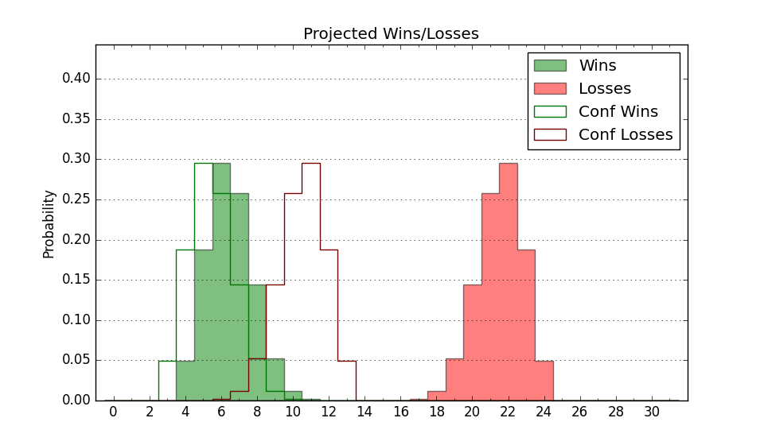

| Home | Game Probabilities | Conferences | Preseason Predictions | Odds Charts | NCAA Tournament |
| City: | Brooklyn, New York | |
| Conference: | Northeast (5th)
| |
| Record: | 3-3 (Conf) 4-14 (Overall) | |
| Ratings: | Comp.: -25.6 (360th) Net: -25.8 (358th) Off: 88.2 (357th) Def: 114.0 (335th) SoR: 0.0 (178th) |
| Remaining | ||||||
|---|---|---|---|---|---|---|
| Date | Opponent | Win Prob | Pred. | |||
| 1/27 | @ Le Moyne (288) | 12.0% | L 66-80 | |||
| 2/1 | @ Fairleigh Dickinson (328) | 19.0% | L 72-82 | |||
| 2/3 | St. Francis PA (351) | 58.3% | W 71-69 | |||
| 2/8 | Merrimack (194) | 16.2% | L 60-71 | |||
| 2/10 | Sacred Heart (294) | 32.7% | L 70-75 | |||
| 2/15 | Fairleigh Dickinson (328) | 44.5% | L 76-78 | |||
| 2/17 | @ Merrimack (194) | 5.4% | L 55-76 | |||
| 2/22 | Le Moyne (288) | 31.8% | L 70-76 | |||
| 2/24 | @ Wagner (314) | 14.7% | L 58-69 | |||
| 2/29 | @ Central Connecticut (232) | 7.2% | L 61-79 | |||
| Previous | Game Score | |||||
| Date | Opponent | Win Prob | Result | Off | Def | Net |
| 11/10 | Air Force (166) | 12.8% | L 67-82 | 5.0 | -9.2 | -4.2 |
| 11/13 | @Pepperdine (225) | 7.0% | L 53-88 | -21.1 | 5.2 | -15.9 |
| 11/15 | @UCLA (135) | 3.0% | L 58-78 | 3.4 | 1.2 | 4.6 |
| 11/21 | @Columbia (234) | 7.4% | L 67-77 | -4.1 | 9.5 | 5.5 |
| 11/24 | (N) Tex A&M Corpus Chris (248) | 13.9% | W 83-68 | 23.5 | 16.6 | 40.2 |
| 11/25 | @Northern Kentucky (186) | 5.0% | L 64-72 | 1.2 | 14.1 | 15.3 |
| 12/2 | @FIU (273) | 9.4% | L 59-74 | -13.9 | 13.0 | -0.9 |
| 12/6 | @Miami FL (58) | 1.0% | L 49-97 | -13.0 | -2.0 | -15.0 |
| 12/12 | @UMass Lowell (134) | 3.0% | L 65-78 | 14.7 | 3.8 | 18.4 |
| 12/16 | @Rutgers (105) | 2.0% | L 61-83 | 8.1 | -0.9 | 7.1 |
| 12/23 | @Mount St. Mary's (247) | 7.8% | L 59-87 | -6.7 | -8.0 | -14.7 |
| 12/28 | Albany (260) | 24.2% | L 69-86 | -12.5 | -0.7 | -13.2 |
| 1/4 | Wagner (314) | 37.0% | W 69-67 | 10.2 | -2.2 | 8.1 |
| 1/6 | @Stonehill (355) | 32.2% | W 73-68 | 7.4 | 7.6 | 14.9 |
| 1/13 | @Sacred Heart (294) | 12.5% | L 55-89 | -10.8 | -19.3 | -30.0 |
| 1/19 | @St. Francis PA (351) | 29.1% | L 66-72 | 4.1 | -8.5 | -4.5 |
| 1/21 | Central Connecticut (232) | 20.9% | L 63-72 | 4.5 | -10.5 | -6.0 |
| 1/25 | Stonehill (355) | 61.8% | W 63-60 | 2.2 | -4.9 | -2.7 |
| Stats & Trends | |||||
|---|---|---|---|---|---|
| Current | Day | Week | Month | Season | |
| Composite | -25.6 | -0.0 | -1.1 | -2.9 | -2.8 |
| Comp Rank | 360 | -- | -1 | -7 | +1 |
| Net Efficiency | -25.8 | -0.0 | -1.2 | -3.1 | -- |
| Net Rank | 358 | -- | -3 | -8 | -- |
| Off Efficiency | 88.2 | -0.0 | +0.4 | +1.2 | -- |
| Off Rank | 357 | -- | +2 | -2 | -- |
| Def Efficiency | 114.0 | -0.0 | -1.6 | -4.3 | -- |
| Def Rank | 335 | -- | -12 | -34 | -- |
| SoS Rank | 305 | -- | -61 | -233 | -- |
| Exp. Wins | 6.5 | +0.0 | +0.0 | -0.3 | -0.8 |
| Exp. Conf Wins | 5.5 | +0.0 | +0.0 | -0.0 | -0.0 |
| Conf Champ Prob | 0.0 | -0.0 | -0.0 | -0.5 | -2.1 |

| Advanced Stats | ||
|---|---|---|
| Stat | Value | Rank |
| Off Eff FG % | 0.436 | 347 |
| Off Ast Ratio | 0.119 | 318 |
| Off ORB% | 0.186 | 355 |
| Off TO Rate | 0.169 | 303 |
| Off FT Ratio | 0.307 | 241 |
| Def Eff FG % | 0.535 | 294 |
| Def Ast Ratio | 0.164 | 324 |
| Def ORB% | 0.313 | 301 |
| Def TO Rate | 0.125 | 319 |
| Def FT Ratio | 0.415 | 324 |